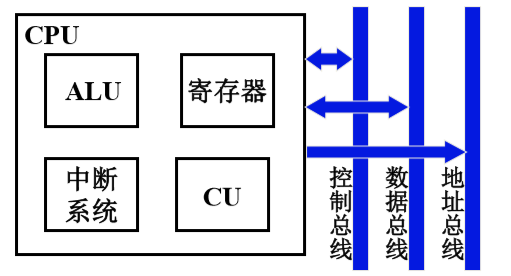

CPU 概述 链接到标题
CPU 的功能 链接到标题
CPU=运算器 + 控制器，运算器部分主要对数据进行加工，控制器负责协调并控制计算机各部件执行程序的指令序列，包括取指令、分析指令和执行指令。
控制器还必须能控制程序的输入和运算结果的输出，以及对总线的管理，处理机器的异常情况和特殊请求，即处理中断的能力。
- 控制器能自动形成指令地址，发出取指令的命令，将对应地址指令取出，称为指令控制
- 取指令后，完成每条指令所需的控制命令，称为操作控制
- 控制命令产生后，对各种控制命令加以时间的控制，称为时间控制
- 执行过程中，需要进行算术运算和逻辑运算，称为数据加工
- 处理特殊请求，需要处理中断的能力，称为中断处理
CPU 与系统总线 链接到标题
- 指令控制，PC、IR
- 操作控制和时间控制，CU 时序电路
- 数据加工，ALU 寄存器
- 处理中断，中断系统

CPU 的寄存器 链接到标题
用户可见寄存器 链接到标题
- 通用寄存器，存放操作数，可作某种寻址方式所需的专业寄存器
- 数据寄存器，存放操作数，两个寄存器拼接存放双倍字长数据
- 地址寄存器，存放地址，其位数应满足最大地址范围，用于特殊的寻址方式，段基址，栈指针
- 条件码寄存器，也叫程序状态字寄存器，存放由算术指令和逻辑指令运行或测试的条件码，如运算结果进位标志、运算结果溢出标志等，可做程序分支的依据，如正、负、零、溢出、进位等
控制器中的寄存器 链接到标题
- 程序计数器 PC，确定下一条指令的地址，对用户可见
- 指令寄存器 IR，保存当前正在执行的指令，用户不可见
- 存储器数据寄存器 MDR，暂时存放由主存读出的一条指令或数据字，用户不可见
- 存储器地址寄存器 MAR，保存当前 CPU 所访问的内存单元的地址，用户不可见
指令周期 链接到标题
指令周期的概念 链接到标题
CPU 取出并执行一条指令所需的全部时间，即 CPU 完成一条指令的时间，称为指令周期。指令周期被划分为几个不同阶段，每个阶段所需时间称为机器周期、CPU 工作周期或基本周期，通常等于取指时间或访存时间，时钟周期是时钟频率的倒数，也称为节拍脉冲或 T 周期。
- 每条指令的指令周期不同

- 具有间接寻址的指令周期

在间接寻址时，需要多访问一次存储器取出有效地址。
- 带有中断周期的指令周期

- 当 CPU 采用中断方式实现主存和 I/O 交换信息时，CPU 在每条指令的执行周期结束前，都要发出中断查询信号，以检测是否有 I/O 提出请求。如果有请求，CPU 要进入中断响应阶段，称为中断周期。
指令周期流程 链接到标题
CPU 工作周期的标志 链接到标题
CPU 访存有四种性质：
- 取指令，取指周期
- 取地址，间址周期
- 存取操作数或结果，执行周期
- 存程序断点，中断周期

指令周期的数据流 链接到标题
取指周期数据流 链接到标题

PC 存放下一条指令的地址，首先 PC 将下一条指令的地址送入 MAR，MAR 将地址经过地址总线送入存储器，然后存储器已经知道了这条指令的地址，然后进行读操作，由 CU 控制，CU 把控制信号送到控制总线，由控制总线送到存储器，然后存储器执行读操作，将相应的数据送到数据总线，经过数据总线送入 MDR，再由 MDR 送入 IR。
如果下一条指令没有跳转，那么下一条指令的地址就是 PC+1，由 CU 控制 +1 操作，将 +1 之后的 PC 指保存进 PC 中，为下一条指令做准备。
间址周期数据流 链接到标题

间址周期表示当前要执行的指令采用间接寻址的方式，假设要取的操作数地址的内存单元的地址保存在 MDR 中，首先将 MDR 的地址码部分送入 MAR 中，取出这条指令所需操作数的内存单元的地址，MAR 将地址送入地址总线，经过地址总线送入存储器，CU 发出读操作，操作信号送入控制总线，在送入存储器，存储器执行读操作，将相应的数据送入数据总线，此时的数据其实是一个地址，是这条指令所需要的操作数所在的内存单元的地址，在经过地址总线送入 MDR，这样 MDR 保存了真正需要的操作数的地址
中断周期数据流 链接到标题
中断周期包括三部分：
- 保存断点
- 形成中断服务程序的入口地址
- 硬件关中断

由 CU 决定将断点保存在哪个内存单元，CU 形成地址，将地址送入 MAR，MAR 经过地址总线将地址存入存储器，保存断点是一个写操作，CU 会向存储器发送写命令，保存断点是保存当前 PC 的值，PC 将地址送入 MDR，由 MDR 送入数据总线，在保存入存储器中，这样就完成了保存断点的过程。中断服务程序的入口地址由 CU 给出，CU 直接将该地址送入 PC 中
不同指令的执行周期操作命令不同，没有统一格式。